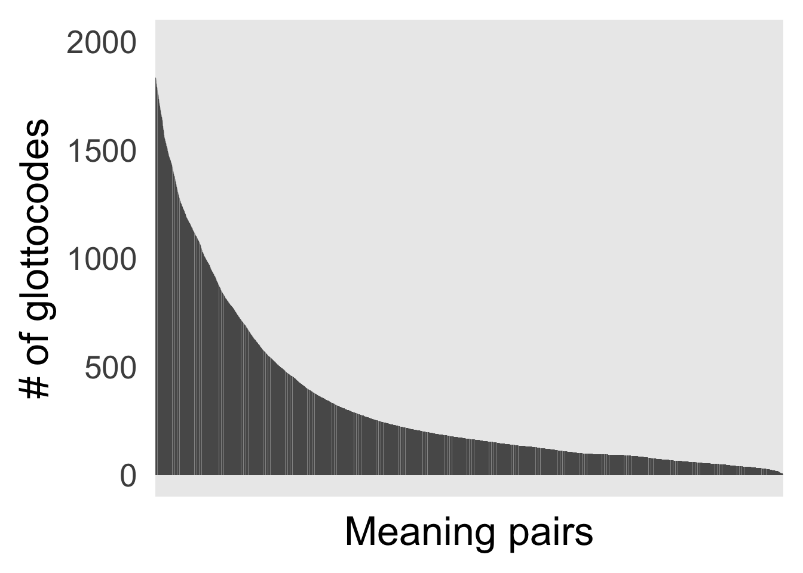

Code
library(dplyr)
library(readr)
library(ggplot2)
library(tidyr)Overview of coverage
library(dplyr)
library(readr)
library(ggplot2)
library(tidyr)The LexiBank (List et al. 2022) data was pre-processed to:
A positive case of colexification is given when two pairs of meanings in a language are associated with the same form (e.g., FINGER and TOE as dedo in Spanish). A negative case is given when two pairs of meanings are expressed by distinct forms (e.g., FINGER and TOE in German as Zeh and Finger).
There are a lot of negative cases in Lexibank (about 8GB worth of CSV). However, for the present purposes, we are only retaining negative cases if we have at least one case in the dataset in which these two meanings do colexify.1 The motivation for this is twofold. First, this is done to not have meaning pairs that have a \(0\) across all rows for colexification.status. Second, to make the data less unwieldy.
df_colex <- read_csv('../data/lexibank/lexibank-colex-unif.csv')
pos <- sum(df_colex$colex)
neg <- nrow(df_colex) - sum(df_colex$colex)This gives a dataset with 6118982 observations, made up of 48397 positive cases of colexification and 6070585 negative cases. The data spans over 1903 unique languages, and 1794 unique meanings.
Here’s a sample of most and least frequently colexified meanings (the floor is 1 and not 0 because we did not retain meaning pairs that do not colexify in any language):
colex_freqs <- df_colex %>% filter(colex == 1) %>% group_by(Concepticon_Gloss.xo,Concepticon_Gloss.yo) %>% summarize(freq = n()) %>% arrange(desc(freq))
rbind(colex_freqs %>% head(n = 10), colex_freqs %>% tail(n = 10))# A tibble: 20 × 3
# Groups: Concepticon_Gloss.xo [12]
Concepticon_Gloss.xo Concepticon_Gloss.yo freq
<chr> <chr> <int>
1 UPPER ARM LOWER ARM 179
2 OLD (AGED) OLD (USED) 166
3 LEG FOOT 161
4 OLDER BROTHER (OF MAN) OLDER BROTHER (OF WOMAN) 159
5 YOUNGER BROTHER (OF MAN) YOUNGER BROTHER (OF WOMAN) 156
6 YOUNGER SISTER (OF MAN) YOUNGER SISTER (OF WOMAN) 150
7 OLDER SISTER (OF MAN) OLDER SISTER (OF WOMAN) 149
8 LIE DOWN SLEEP 148
9 WIFE HUSBAND 147
10 WE (EXCLUSIVE) WE (INCLUSIVE) 145
11 YOUR (PLURAL) US (OBLIQUE CASE OF WE) 1
12 YOUR (SINGULAR) BURN 1
13 YOUR (SINGULAR) DO 1
14 YOUR (SINGULAR) EAT 1
15 YOUR (SINGULAR) NOT 1
16 YOUR (SINGULAR) ROAST (SOMETHING) 1
17 YOUR (SINGULAR) SHOOT 1
18 YOUR (SINGULAR) SKIN 1
19 YOUR (SINGULAR) THOU 1
20 YOUR (SINGULAR) WORK (LABOUR) 1And here’s a visual overview of the linguistic coverage we have for meaning pairs (irrespective of their colexification status):
df <- df_colex %>%
select(Glottocode, Concepticon_Gloss.xo, Concepticon_Gloss.yo) %>%
unique() %>%
mutate(cpair = paste0(Concepticon_Gloss.xo, '-', Concepticon_Gloss.yo)) %>%
group_by(cpair) %>%
summarize(freq = n()) %>%
mutate(rnk = rank(freq, ties.method='last'))
#d <- df
#d$cpair <- factor(d$cpair, levels=d$rnk)
df %>% ggplot(aes(x = reorder(rnk, -rnk), y = freq)) +
geom_bar(stat = 'identity') +
theme_minimal(base_size = 25) +
xlab('Meaning pairs') +
ylab('# of glottocodes') +
theme(axis.ticks.x=element_blank(),
axis.text.x = element_blank()) +
ylim(0,2000)
And a sample of the most/least covered meaning pairs:
rbind(df %>% select(-rnk) %>% arrange(desc(freq)) %>% head(n = 10),
df %>% select(-rnk) %>% arrange(desc(freq)) %>% tail(n = 10)
)# A tibble: 20 × 2
cpair freq
<chr> <int>
1 NOSE-EYE 1849
2 EAR-EYE 1846
3 EYE-HEAD 1844
4 NOSE-HEAD 1842
5 TONGUE-EYE 1840
6 TONGUE-NOSE 1840
7 NOSE-EAR 1839
8 EAR-HEAD 1832
9 MOUTH-EYE 1831
10 MOUTH-NOSE 1831
11 OIL (ORGANIC SUBSTANCE)-BEAT 3
12 RIPE-LARVA 3
13 TIE UP (TETHER)-MUNTJACS 3
14 BROTHER-SAME-SEX OLDER SIBLING 2
15 CARVE-DO OR MAKE 2
16 FARM-GARDEN 2
17 PAN-COOKING POT 2
18 FRIEND-SAME-SEX OLDER SIBLING 1
19 PREGNANT-RAISE (BRING UP) 1
20 SWELL-SOUND (OF INSTRUMENT OR VOICE) 1Here are the quantiles for number of languages covering a given meaning pair:
quantile(df$freq) 0% 25% 50% 75% 100%
1 90 166 383 1849 df_geo <- read_csv('../data/glottolog/languages_and_dialects_geo.csv') %>%
select(glottocode, macroarea, latitude, longitude)
df_trees <- read_csv('../data/glottocodes_in_trees.csv') %>%
left_join(df_geo)
df_goriginal <- df_trees %>% filter(source == 'glottolog.original')
df_gexponential <- df_trees %>% filter(source == 'glottolog.exponential')
df_gultrametric <- df_trees %>% filter(source == 'glottolog.ultrametric')
df_zhang <- df_trees %>% filter(source == 'zhang')
df_jaeger <- df_trees %>% filter(source == 'gerhard')
df_mcmc <- df_trees %>% filter(source == 'mcmc')
df_betal22 <- df_trees %>% filter(source == 'betal22')
#setdiff(df_goriginal$glottocode, df_gexponential$glottocode)
#setdiff(df_goriginal$glottocode, df_gultrametric$glottocode)
#setdiff(df_goriginal$glottocode, df_betal22$glottocode)The phylogenetic trees come in 7 different kinds, depending on the source/method by which they were constructed: glottolog.original, glottolog.exponential, glottolog.ultrametric, gerhard, mcmc, zhang, betal22.2 For the purposes of quantifying coverage, the three glottolog variants can be treated as one as they are the same in this respect.
Counting glottocodes at the tips of trees, we have:
Overview of phylogenetic coverage of colexification data for each of the five “tree kinds”.
Visual impression of coverage of Glottolog tree of the glottocodes involved in the colexification data:
df_colex_glottocodes <-
df_colex %>% select(Glottocode) %>% unique() %>%
mutate(Covered = ifelse(Glottocode %in% unique(df_goriginal$glottocode), 'Yes', 'No'),
cov = ifelse(Glottocode %in% unique(df_goriginal$glottocode), 1, 0)) %>%
rename(glottocode = Glottocode) %>%
left_join(select(df_geo, latitude, longitude, glottocode))
covered_glottocodes <- df_colex_glottocodes %>% filter(cov == 1) %>% select(glottocode) %>% unique() %>% pull()
df_colex_cov <- df_colex %>% filter(Glottocode %in% covered_glottocodes)
mp <- map_data('world')
ggplot() +
geom_polygon(data = mp, aes(x = long, y = lat, group=group)) +
geom_point(data = drop_na(df_colex_glottocodes), aes(x = longitude, y = latitude, col = Covered)) +
theme_minimal(base_size = 13) +
theme(axis.title.x=element_blank(),
axis.text.x=element_blank(),
axis.ticks.x=element_blank(),
axis.title.y=element_blank(),
axis.text.y=element_blank(),
axis.ticks.y=element_blank(),
legend.position = c(0.9,0.1),
legend.background = element_rect(fill='grey',
size=0.25)
)
In all these maps, 75 languages are not depicted because I didn’t have lat/long information for them3.
Retaining only glottologs with geographic information (as depicted), the trees cover 589 out of 1828 glottocodes.
Including glottocodes without geographic information, the trees cover 629 out of 1903. This corresponds to 14740 positive cases of colexification; and 2027460 negative cases.
Visual impression of coverage of Zhang tree of the glottocodes involved in the colexification data:
df_colex_glottocodes <-
df_colex %>% select(Glottocode) %>% unique() %>%
mutate(Covered = ifelse(Glottocode %in% unique(df_zhang$glottocode), 'Yes', 'No'),
cov = ifelse(Glottocode %in% unique(df_zhang$glottocode), 1, 0)) %>%
rename(glottocode = Glottocode) %>%
left_join(select(df_geo, latitude, longitude, glottocode))
covered_glottocodes <- df_colex_glottocodes %>% filter(cov == 1) %>% select(glottocode) %>% unique() %>% pull()
df_colex_cov <- df_colex %>% filter(Glottocode %in% covered_glottocodes)
mp <- map_data('world')
ggplot() +
geom_polygon(data = mp, aes(x = long, y = lat, group=group)) +
geom_point(data = drop_na(df_colex_glottocodes), aes(x = longitude, y = latitude, col = Covered)) +
theme_minimal(base_size = 13) +
theme(axis.title.x=element_blank(),
axis.text.x=element_blank(),
axis.ticks.x=element_blank(),
axis.title.y=element_blank(),
axis.text.y=element_blank(),
axis.ticks.y=element_blank(),
legend.position = c(0.9,0.1),
legend.background = element_rect(fill='grey',
size=0.25)
)
Retaining only glottologs with geographic information (as depicted), the trees cover 32 out of 1828 glottocodes.
Including glottocodes without geographic information, the trees cover 40 out of 1903. This corresponds to 2801 positive cases of colexification; and 230345 negative cases.
Visual impression of coverage of MCMC tree of the glottocodes involved in the colexification data:
df_colex_glottocodes <-
df_colex %>% select(Glottocode) %>% unique() %>%
mutate(Covered = ifelse(Glottocode %in% unique(df_mcmc$glottocode), 'Yes', 'No'),
cov = ifelse(Glottocode %in% unique(df_mcmc$glottocode), 1, 0)) %>%
rename(glottocode = Glottocode) %>%
left_join(select(df_geo, latitude, longitude, glottocode))
covered_glottocodes <- df_colex_glottocodes %>% filter(cov == 1) %>% select(glottocode) %>% unique() %>% pull()
df_colex_cov <- df_colex %>% filter(Glottocode %in% covered_glottocodes)
mp <- map_data('world')
ggplot() +
geom_polygon(data = mp, aes(x = long, y = lat, group=group)) +
geom_point(data = drop_na(df_colex_glottocodes), aes(x = longitude, y = latitude, col = Covered)) +
theme_minimal(base_size = 13) +
theme(axis.title.x=element_blank(),
axis.text.x=element_blank(),
axis.ticks.x=element_blank(),
axis.title.y=element_blank(),
axis.text.y=element_blank(),
axis.ticks.y=element_blank(),
legend.position = c(0.9,0.1),
legend.background = element_rect(fill='grey',
size=0.25)
)Retaining only glottologs with geographic information (as depicted), the trees cover 393 out of 1828 glottocodes.
Including glottocodes without geographic information, the trees cover 394 out of 1903. This corresponds to 9014 positive cases of colexification; and 1332298 negative cases.
Visual impression of coverage of Jäger tree of the glottocodes involved in the colexification data:
df_colex_glottocodes <-
df_colex %>% select(Glottocode) %>% unique() %>%
mutate(Covered = ifelse(Glottocode %in% unique(df_jaeger$glottocode), 'Yes', 'No'),
cov = ifelse(Glottocode %in% unique(df_jaeger$glottocode), 1, 0)) %>%
rename(glottocode = Glottocode) %>%
left_join(select(df_geo, latitude, longitude, glottocode))
covered_glottocodes <- df_colex_glottocodes %>% filter(cov == 1) %>% select(glottocode) %>% unique() %>% pull()
df_colex_cov <- df_colex %>% filter(Glottocode %in% covered_glottocodes)
mp <- map_data('world')
ggplot() +
geom_polygon(data = mp, aes(x = long, y = lat, group=group)) +
geom_point(data = drop_na(df_colex_glottocodes), aes(x = longitude, y = latitude, col = Covered)) +
theme_minimal(base_size = 13) +
theme(axis.title.x=element_blank(),
axis.text.x=element_blank(),
axis.ticks.x=element_blank(),
axis.title.y=element_blank(),
axis.text.y=element_blank(),
axis.ticks.y=element_blank(),
legend.position = c(0.9,0.1),
legend.background = element_rect(fill='grey',
size=0.25)
)Retaining only glottologs with geographic information (as depicted), the trees cover 1484 out of 1828 glottocodes.
Including glottocodes without geographic information, the trees cover 1485 out of 1903. This corresponds to 36839 positive cases of colexification; and 4722788 negative cases.
Visual impression of coverage of Betal22 tree of the glottocodes involved in the colexification data:
df_colex_glottocodes <-
df_colex %>% select(Glottocode) %>% unique() %>%
mutate(Covered = ifelse(Glottocode %in% unique(df_betal22$glottocode), 'Yes', 'No'),
cov = ifelse(Glottocode %in% unique(df_betal22$glottocode), 1, 0)) %>%
rename(glottocode = Glottocode) %>%
left_join(select(df_geo, latitude, longitude, glottocode))
covered_glottocodes <- df_colex_glottocodes %>% filter(cov == 1) %>% select(glottocode) %>% unique() %>% pull()
df_colex_cov <- df_colex %>% filter(Glottocode %in% covered_glottocodes)
mp <- map_data('world')
ggplot() +
geom_polygon(data = mp, aes(x = long, y = lat, group=group)) +
geom_point(data = drop_na(df_colex_glottocodes), aes(x = longitude, y = latitude, col = Covered)) +
theme_minimal(base_size = 13) +
theme(axis.title.x=element_blank(),
axis.text.x=element_blank(),
axis.ticks.x=element_blank(),
axis.title.y=element_blank(),
axis.text.y=element_blank(),
axis.ticks.y=element_blank(),
legend.position = c(0.9,0.1),
legend.background = element_rect(fill='grey',
size=0.25)
)Retaining only glottologs with geographic information (as depicted), the trees cover 1612 out of 1828 glottocodes.
Including glottocodes without geographic information, the trees cover 1615 out of 1903. This corresponds to 40738 positive cases of colexification; and 5185670 negative cases.
df_tree <- df_trees %>% filter(source != 'glottolog.exponential') %>%
filter(source != 'glottolog.ultrametric') %>%
select(source, glottocode) %>%
unique() %>%
group_by(glottocode) %>%
summarize(n = n())
df_colex_tree <- df_colex %>% select(Glottocode) %>%
rename(glottocode = Glottocode) %>%
unique() %>%
left_join(df_tree) %>%
mutate(n = ifelse(is.na(n), 0, n))
df_colex_tree %>% ggplot(aes(x = n)) +
geom_bar() +
theme_minimal(base_size = 15) +
xlab('# of tree kinds') +
ylab('# of glottocodes from colex data') +
xlim(-0.5,5)This decision needs to be discussed.↩︎
If I recall correctly, MCMC is also a grouping composed of different (non-global) trees↩︎
Based on the languages_and_dialects_geo.csv-file in Glottolog: https://glottolog.org/meta/downloads↩︎
Comments